It's the 10th anniversary of Resin Rose! It's the 22nd birthday and death of Den of Angels! Also the day of the DoA revival announcement?? There's some crazy doll drama, my dudes. We will leave that for another page.
I've been wanting to go to Resin Rose for a few years but I haven't gotten the chance to until this year. The biggest draw was seeing other BJD cons and only seeing Western dolls at them. I saw photos of this con and thought that there still might be a con out there that I would be the audience for! While there's quite a few Western BJD makers attending, they're still making dolls in the spirit of Asian BJDs.
We chose not to attend the dinner of day 1. Hopefully someone else can review it!
The venue is the Hilton Garden Inn, which had a sheet over the old Monarch Hotel sign. I see now that the hotel had already changed the name before the Resin Rose in 2025. I'm not impressed they haven't replaced the sign in an entire year.
This con had some issues. We entered and looked for where to get our badges. There was a schedule posted in the hotel lobby, but no map. We went downstairs, we went upstairs, we went across the indoor bridge, we saw nothing, we went back and asked, we....
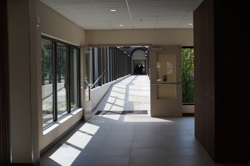
We had a really hard time!! There needs to be signs pointing towards registration! There needs to be a ton more signage! We were totally LOST!
The two parts of the con are connected by either the bridge or walking through the pool area. It's not especially convenient since you have to walk up the stairs and then back down the stairs to get to the other side.
While wandering looking for registration on the indoor bridge, a normie woman spoke loudly to herself while passing us "Jesus Christ, is this a convention for the mentally ill?" I laughed! Enjoy your boring dolless life, silly woman!
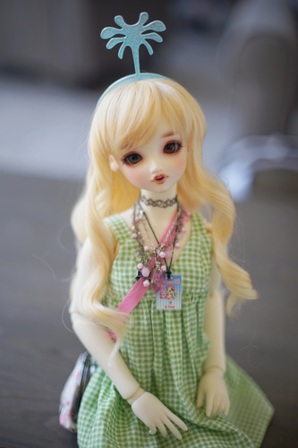
The venue had a huge lack of places to just chill and chat. The hotel lobby was okay but not big enough. The meetup room was fine, but also not big enough for maximum chilling and chatting. There was a quiet room for coloring, which was actually not a very big room at all. People want to sit around and talk to each other! But where? I hope they didn't all head back to their rooms to sit alone!
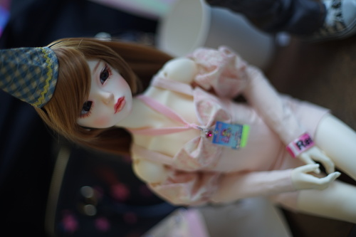
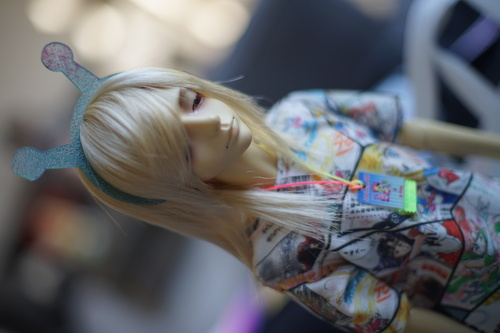
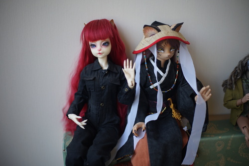
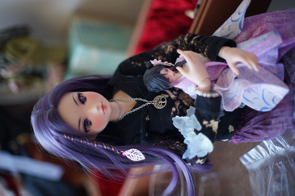
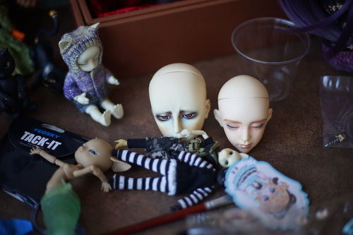
Floating heads did not go unrepresented.
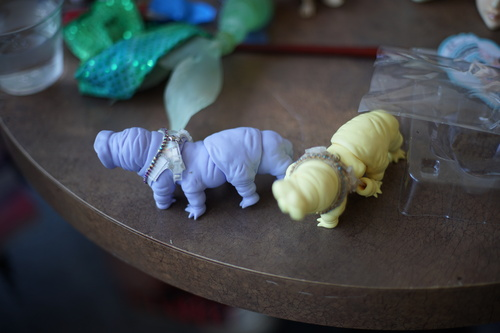
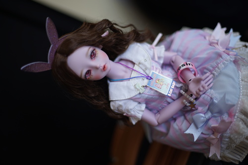
At the end of the con, when we were considering heading home, we were sitting around in the few places that had couches when I saw an old friend! We were catching up for a bit after not seeing each other for like 10 years, and then I turned my head and saw a name on a badge... GLACELEAU??? THE CREATOR OF MY 2 FAVORITE GAY CRIMINALS??? NO WAY??????? [fangirl moment]. She told me she had left a bunch of 3D prints from the body she was carrying on the free table and I BOOKED it back to the free table across the hotel and now I own my very own chunks of Glaceleau!!
If you're interested in the results of the zine I designed to give out at the con, I made 20 Hina zines to start. At the end of Saturday, I had 4 left. I printed 10 more Saturday night. I ended the con with 2! I'll have to print many more than 30 of the next zine for Dolpa.
I asked about room parties and I am under the impression that the con had 0 room parties?? That's it. I'm inviting Offkai Expo next year!!
Resin Rose ran 4 contests at the convention: costume, photography, face up, and prop. They had the contestants lined up down a side hallway.
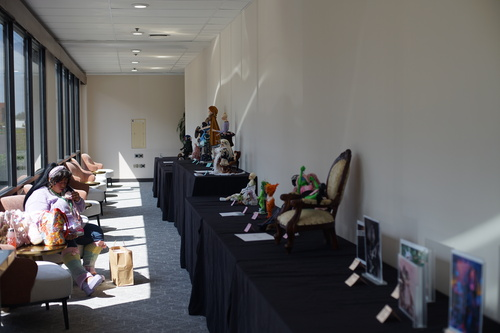
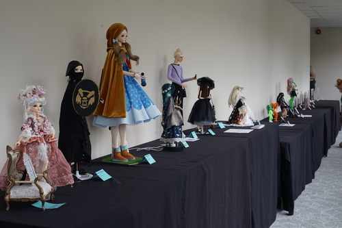
Prop contest
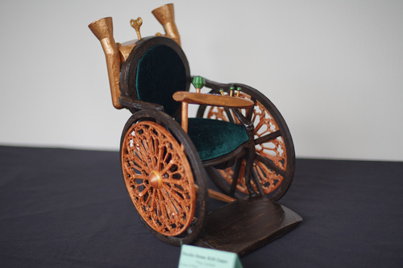
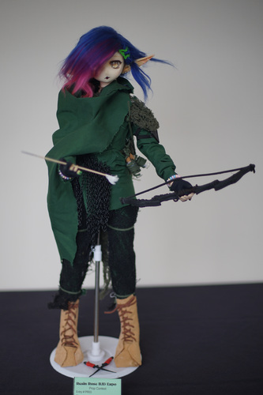
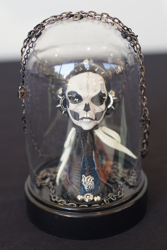
Costume contest
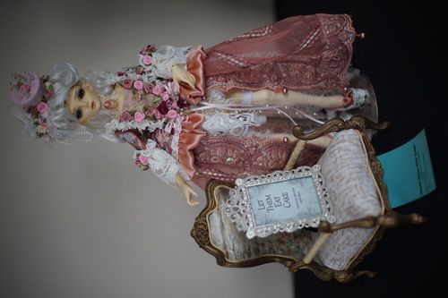
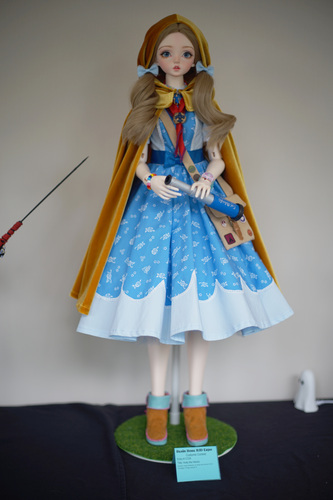
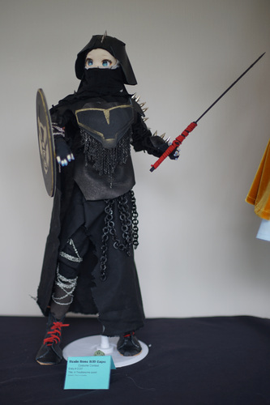
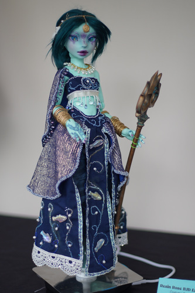
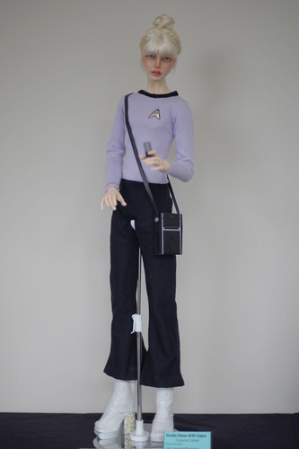
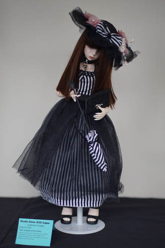
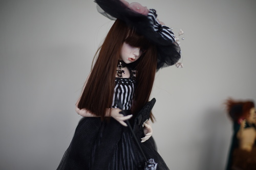
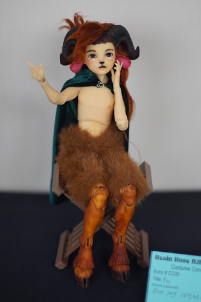
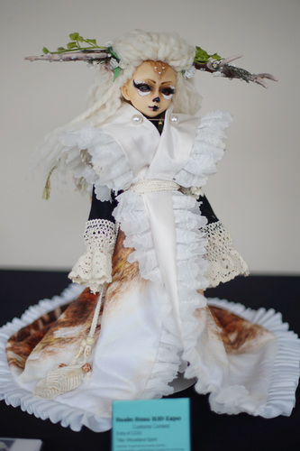
Faceup contest
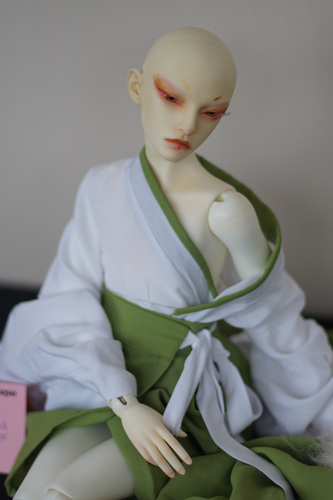
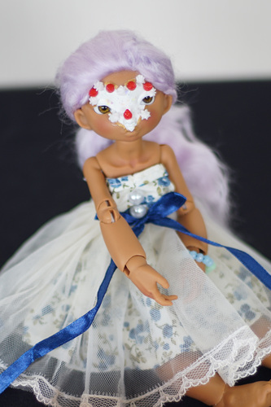
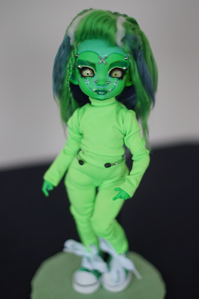
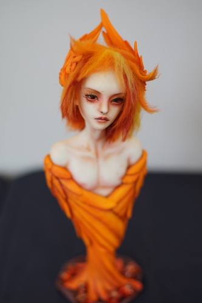
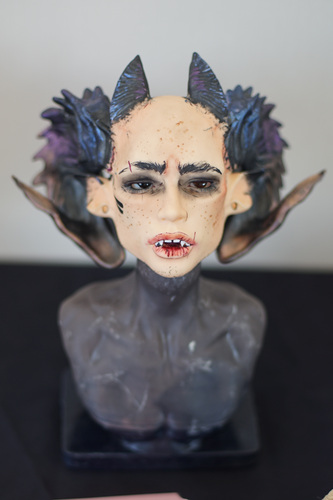
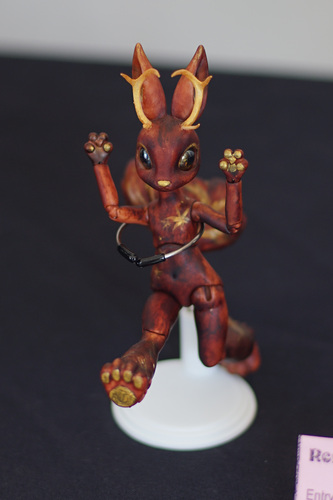
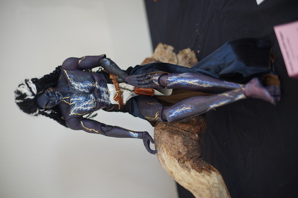
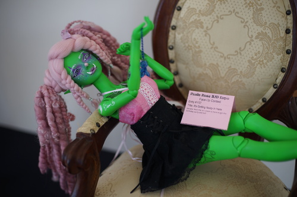
Resin Rose had a room designated for meetups that attendees could claim ahead of time. I attended 2 of the meet ups. Resin Rose also had a few panels, but I did not attend any due to the ones I wanted to attend overlapping with the meet ups I wanted to go to. Maybe next time...
First off was the DoA Funeral. I was a little late due to the Incident at the Kumukuku Booth that I will discuss later.
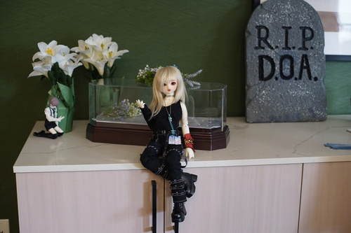
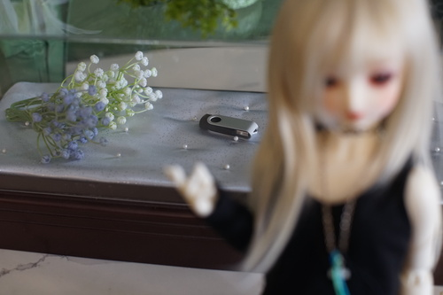
Suprisingly, the entire convention didn't come to the funeral?! It had good attendance though. There was a little notebook with a pen so you could pay your respects and a little photo area so you could take photos of your dolls mourning. Claud made and brought badge ribbons that said "RIP DOA".
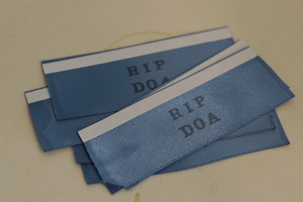
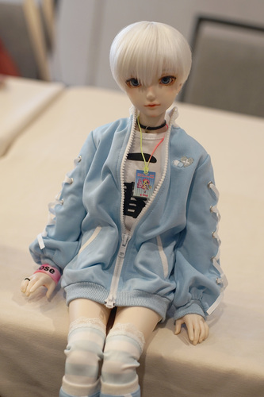
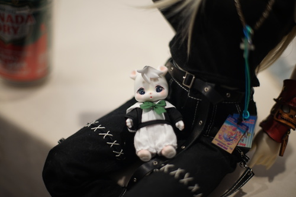
Foreshadowing for the Incident at the Kumukuku Booth
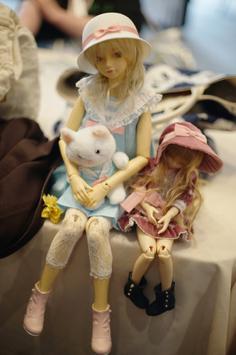
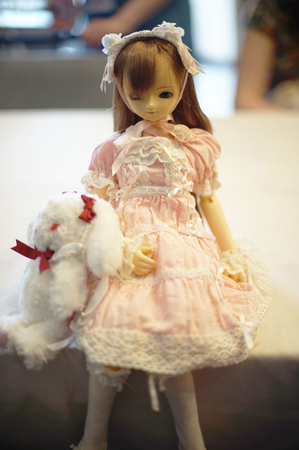
Number 71!
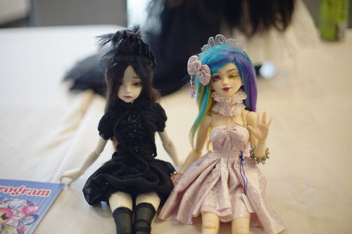
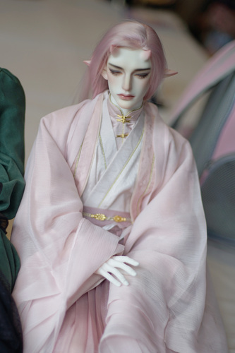
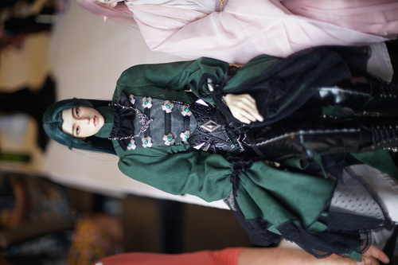
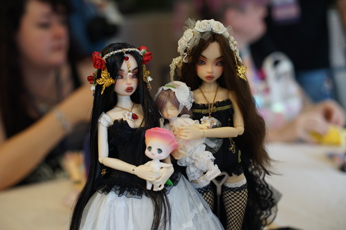
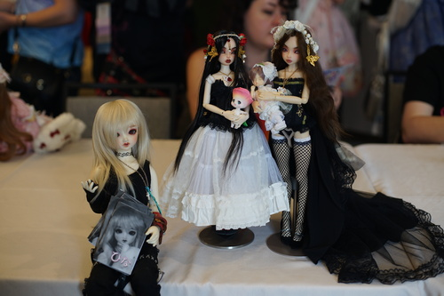
There were snacks and drinks provided at the funeral, but we weren't allowed to eat in the room so we had to step outside to the pool area.
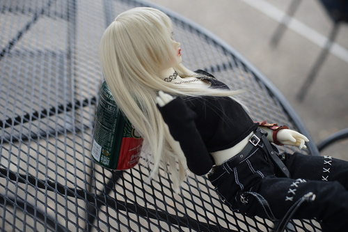
"Hey Fran did you see where my drink went? I can't find it."
At around 11:30 PM of the night before DoA's closing, Dezarii came back and closed the forum herself, saying the forum would reopen in September. Many users had just joined Lovely Everyone and the old mods had already started speaking out, so this was a hot topic at the funeral!
The Volks meetup was on Sunday and had a good turn out! The host (TsubaZa) had everyone introduce themselves and the doll(s) they brought. I wasn't brave enough for that. Sorry everynyan... >_<
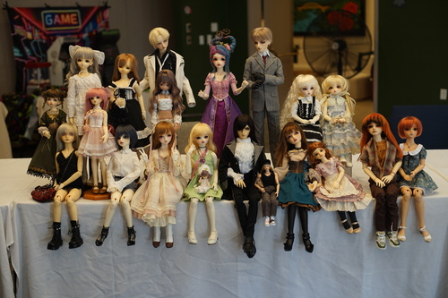
After the introductions, the host had everyone set up their dolls together for a photo! Everyone was so cute!
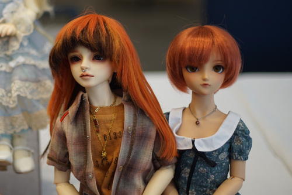
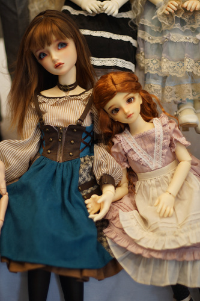
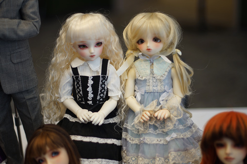
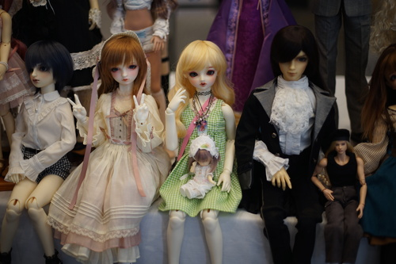
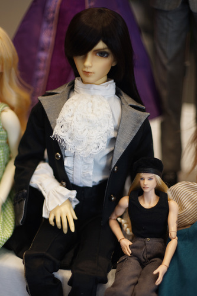
We also stopped by the Blind Box Swap Meet. I didn't have anything to swap so I just looked around. Apparently, they've started making rooted hair blind boxes recently!
I noticed something a little strange at the meetups. People were sitting at the tables in front of their dolls. I would like to suggest to others that you put your dolls next to other dolls and do not sit in front of them so everyone can come look at them and enjoy them! Please let me look at your dolls!!
I ended up taking almost all of these photos on Sunday while leaving Hina in the car. It was quite a bit more crowded than this earlier in the con.
The worst thing that Resin Rose does is put Cocoriang, Kumukuku, and people with money in the same room. Both booths were full of the cutest animal dolls. A lot of attendees were walking around with their own in little display bags! Everyone loves these little guys!
I was no exception. I knew I was in danger after seeing the Resin Rose outreach booth at Kumoricon. I checked both Cocoriang and Kumukuku's sites to make sure I knew what all the options were before walking into the storm. I decided I liked the lop bunny (Cocoriang Groomy or Kumukuku Lavi) or the bear (Kumukuku Puko) best.
I'll start with Kumukuku~
I saw a woman with 4 dolls in her basket at Kumukuku!! She was there forever picking out all of their accessories. I saw a yellow Lavi in her basket and was a little (super) jealous~ It was really fun to pick out the doll, hair, eyes, and outfit together. I can't even imagine getting to pick out 4 at once!
It was really hard to choose mine! They had Lavi, but Lavi was in purple and I didn't want purple. I really liked the little brown Puko in the display, but they had no brown Puko for sale. I love the "open" face the most, and they had a Puko in white with that face. I had to go back to the booth like 10 times before making a decision. Once I picked my doll, choosing accessories was very fun! Linus said it was a boy, so I chose an outfit and hair suitable for a boy for him~
And the Cocoriang booth. Maybe I was looking too far into things, but the Cocoriang booth felt less cheery than Kumukuku.
They even brought 2 cute one-offs!
Cocoriang actually brought a really cool product! They made a doll the mascot of the convention, Rosette. There were a few of her and she has painted instead of inset eyes.
This one was not located at the Cocoriang booth.
I'll have to get a little bunny too someday. Maybe next year one of these two booths will bring the perfect bunny for me!
Gothic Angel BJD
Gothic Angel BJD
Glowmoon Dolls / Iamibo
Iamibo
Iamibo
DSD F-01 at Tout Sweet
Fiend Dolls
Fiend Dolls
Fiend Dolls
Fiend Dolls
BugMemory
I answered the Sphynx's riddle but I didn't get a prize
EmajAnime
Anomalous Designs BJD
Anomalous Designs BJD
Anomalous Designs BJD
Express and Enchant
Express and Enchant
Express and Enchant
Denver Doll Emporium
Denver Doll Emporium
The Raven's Nest
The Raven's Nest
Kimber Goods
Kimber Goods
Kimber Goods
As you all know, I'm a huge fan of Denim Dan's Jeans Emporium! Unfortunately, this year Kim has rebranded to Kimber Goods! I missed it!! I'm so upset! Her booth was lovely though, but didn't have anything that I felt my dolls would wear.
Asteria
Asteria
Asteria. Linus was unable to recognize his grail, so I am buying him any doll and telling him it's Victorique
Asteria
Asteria
Asteria
Asteria
Asteria
Asteria
Aurum79
Aurum79
Aurum79
Aurum79
Aurum79
Aurum79
69resin
69resin
a client at 69resin
69resin
69resin
I saw that 69resin was selling constants' photobooks and zines! I was really excited because I love her work! Unfortunately, the new photobook was doll (zine) sized and not human sized. I purchased the larger 2022-2023 photobook and a risoprint of her RG Will, Laurence~ I hope someday the newer photobook will be printed in a larger size.
Mara Brand
Mara Brand
Mara Brand
Mara Brand
A Beaver Makes Nails
A Beaver Makes Nails
5e7en
5e7en
5e7en
5e7en
5e7en
5e7en
5e7en
Synthetic Ephemera
Synthetic Ephemera
Synthetic Ephemera
Comi Baby Doll
Ruby Red Galleria
Space Studio. Are we sure these aren't baby shoes?
The Mushroom Peddler
The Mushroom Peddler
The Mushroom Peddler
Wings of the Wild
Wings of the Wild
Wings of the Wild
Wings of the Wild
Italian Doll
Italian Doll
Italian Doll
Jade Gordon & Dove Sherman
Batchix Dolls
Batchix Dolls
Mischief Maker
Mischief Maker
Mischief Maker
Mischief Maker
Mischief Maker
Trash Panda Prints
Trash Panda Prints
Trash Panda Prints
Trash Panda Prints
Trash Panda Prints
Poutyface
PamSD Mini Costuming
Pixidust Designs
Pixidust Designs
OVKstudiodolls
Callie's Creations
Logan.Dolls
Logan.Dolls
Rap1993
Rap1993
Rap1993
Rap1993. Ashton Marten is here!
Rap1993
Rap1993. Actually I'm pretty sure this doll is Ashton Marten
Cirque de Fantomes
Cirque de Fantomes
Cirque de Fantomes
Cirque de Fantomes
Angeldollz
Angeldollz
Angeldollz
Angeldollz
The women at Angeldollz were constantly taking photos and doing interviews with each other at their table and it made it very hard to get down this aisle. >_>;;
Kiwi Lemon Stitch
Kiwi Lemon Stitch
I loved both the models at Kiwi Lemon Stitch ;u; So CUTE!!
Starving Cats, Co.
Starving Cats, Co.
Cor Leonis BJD
Cor Leonis BJD
Cor Leonis BJD
FrozenOverStudios / EverydayDollyDomes
FrozenOverStudios / EverydayDollyDomes
Northern Lights Crafts
Northern Lights Crafts
Northern Lights Crafts
Northern Lights Crafts
Northern Lights Crafts
Northern Lights Crafts
Raffle prizes
Raffle dolls
I noticed that a few sellers were using AI generated images, which I didn't expect. ItalianDoll used one as their logo and Tout Sweets used them on their business cards.
Saturday of the con, a waterfall appeared out of the ceiling in the vendor's hall on the booth of The Raven's Nest. Apparently there was minimal damage to the booth, but still damage. The staff said they guessed a room above had left their bathtub running. I didn't hear if the cause was confirmed. The Raven's Nest was moved to a different location in the vendor's hall after and the waterfalled table was left empty.
There was one lost item at the con that I don't believe was ever found. One of the vendors had lost a head from her booth and was asking everyone in the vendor's hall at the time if they had seen it. I'm seeing now that the head was not found and was likely stolen at the convention.
The swap meet was CROWDED. It was super hot and super packed and but still a lot of fun to look through! Most of the stuff wasn't for me but there was a lot of variety. Some tables to the side were empty, while the center aisle was packed full. It's possible they didn't sell all of the swap table spaces, but the empty tables could have been better distributed to slightly ease the crowding. I have a suspicion some of the sellers chose to table right next to each other instead of the con organizers assigning tables.
There was a booth selling multiple very yellowed SD10/13 bodies for $50 and under and let's just say that booth was quite popular!! I saw people walking around with bodies looking for a head to put on it. It's very silly to me to buy a body first before a head, but I hope it works out for them all!
One of the sellers had a few Idealian bodies on her table and they were MASSIVE!! She let me play with them a little. I thought they'd be really heavy too but I was suprised they were liftable.
I lost Pafa's arm warmer (worn by Hina) during the swap meet. I saw Jamie (MysteryAya) and asked about the lost and found. She told me to check the Synthetic Ephemera booth the next day. Sure enough, someone had returned Pafa's arm warmer! Thank you!! We kept hearing announcements on Sunday to come check the lost and found so I hope you didn't forget anything there!
We stopped by the Recharge Room to decide where we were going to eat and there were a couple people coming in and out. There were coloring sheets for the coloring contest with lots of crayola crayons and colored pencils to use. I'm not very good at coloring so I drew Hina instead. For some reason, my drawing was accepted into the coloring contest still!
Resin Rose had a bunch of photo sets set up around the con.
definitely AI backdrop
In addition, they had a room upstairs for photography. It was really crammed though!
We should have expected this.
Birth of Hina
Solveig and Hina as Portland rioters
I did visit the DIY room briefly! It wasn't very large but they were making tiny cute cakes and had lots of elastic for restringing.
RG Will risoprint, free Dolls magazine, a coloring sheet from Miraxedoll
Postcards and fans from Kumukuku, Cocoriang, and Peakswood (not attending)
Flyers from the Asteria booth
The full load out for Ju Kim! We bought him 2 shirts (one was from Cocoriang), 1 pair of pants, eyes, and hair in addition to the doll himself.
A number of Glaceleau chunks, a silly headband, a black 9-10 wig intended for Santi, SD converse, 14mm light blue eyes to replace Pafa's blue eyes, 16mm purple glass eyes to replace Rio's much-more-pink-than-purple eyes.
I honestly think Resin Rose should ditch this venue. While I was disappointed there weren't a ton of hang out spaces available for everyone, the venue didn't have a lot of space for them either. There were a few couches in a few sitting areas and a meetup room, but it didn't feel like enough. I really wanted to chat with people sitting around with their dolls but that's really hard when people are going back to their rooms. I kept wondering where everyone went!
There was downtime between events, which is expected, but left people like us, who weren't staying in the hotel, with not much to do. The vendor's hall closed at 4:30 and 4:45 and the next events for the night were almost 2 hours after. The closing ceremony was at 6:30 PM but we left before it due to hungry.
I hope I didn't win anything because all winners were announced at the closing ceremony! If you entered a raffle on Saturday, it was announced on Sunday and you needed to be there to pick it up. I don't really think that's fair. While the organizers shouldn't be obliged to ship anything, attendees shouldn't be required to have a Sunday badge and stay until 8:30 PM on Sunday to pick up the item they won.
We definitely need more signage next con! Please please tell us Resin Rose noobs where to pick up our badges!